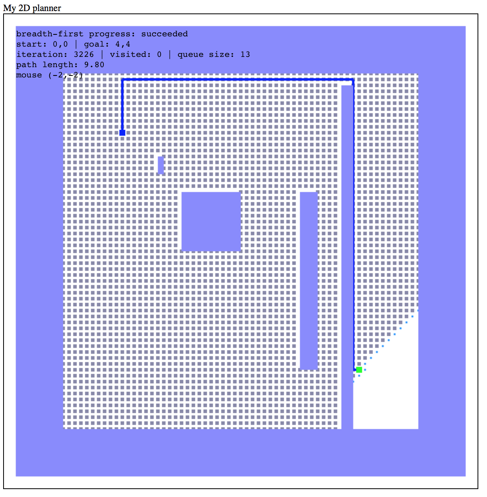

A*
Greedy Best First

In this project, we implemented four different path planning algorithms. In this report, I will talk about the implementation of each as well as compare their effectiveness in different situations.
A* |
Greedy Best First |
BFS |
DFS |
A* search is a heuristic-based search. It relies on visiting nodes in order of their highest f_score, a metric
that is the sum of the Manhattan/L1 distance from the start node to the current node and the Euclidean/L2 distance
from the current node to the end node.
In the empty situation we see the effectiveness of A* in that it is relatively fast, and gives us an optimal solution.
A* is characterized by a "searchlight" pattern towards the goal, as if the algorithm itself is fanning out to avoid possible obstacles.
Greedy Best First Search is another heursitic-based search. It is very similar to A*, in fact, the only difference being that GBF does not
count the Manhattan/L1 distance into its priority heuristic (g_score=0).
GBF shines in the empty situation, as it is very fast when it has a clear path to the goal - as well, it gives an optimal solution.
Breadth-First Search is not a heuristic-based search, rather it keeps a queue of adjacent nodes and searches through them in an attempt
to get to the goal.
BFS ususally takes a very long time to execute yet returns a close to optimal path length.
BFS has a characteristic search strategy, flanging out in a diamond-shaped pattern in an attempt to find the goal.
Depth-First Search is another non-heuristic-based search. Instead of keeping a queue like BFS, DFS keeps a stack of adjacent nodes.
DFS' stack-based approach also takes quite a bit of time, and yields a poor performance. It's path to the goal is characterized by the
snake-like approach.
A* |
Greedy Best First |
BFS |
DFS |
The setup of the Misc situation makes it hard for these four algorithms to optimize on both time and path length.
A* makes the best optimization on time and path length for this situation, as it is wont to do. The algorithm works a bit slow at first,
but when it gets over the 'hump' of the long section, it dives straight down towards the goal and takes it in style.
GBF starts off going directly towards the goal, and very quickly. Once the path hits the long section to right, the algorithm attempts
to find a way around the barrier. In doing so, it grows the visited path in a circle until it can reach over the 'hump'.
Once it does that, it makes a beeline for the goal.
GBF shows its weakness here, as it gets stalled for a long time before revealing a non-optimal path.
BFS starts off in its characteristic diamond pattern, and goes about in this direction until it is able to overcome the aforementioned 'hump'.
In true BFS fashion, BFS takes the longest time to iterate, but takes the optimal path.
It is also interesting to notice an almost 'diffractive' pattern that BFS takes whilst trying to overcome certain obstacles. The path
DFS can finish its search very quickly given a certain situation. The misc situation is ripe for this; the goal just happened to be in the
path of the search pattern.
And again, DFS yields a far from optimal solution.
A* |
Greedy Best First |
BFS |
DFS |
A*, being the most robust algorithm of the four gets to an optimal solution in good time (though not even close to GBF).
GBF shines here, as there is nowhere to get stuck. As the goal is below the narrow channel, GBF's heuristic tells it to initially
search downwards. It doesn't know where any obstacles in the situation are, but thankfully the narrow entry way was in the same
direction as the goal.
If the goal were higher than the entryway, than the search would start by jamming in the wall, and encircling itself
until it could find an opening to get through (we will see this is the case in Narrow2).
BFS arrives at an optimal solution here, but it takes much more time that A*.
DFS Takes both a long time to reach the goal, as well as delivers a non-optimal path.
It is interesting to note that if the algorithm
were seeded differently, that is, we input the southern adjacent node into the stack first (and not the northern as is here), the
algorithm could have run a few hundred iterations faster. This susceptibility is a major drawback of DFS, among other useless features it has.
A* |
Greedy Best First
|
BFS |
DFS |
A* has a bit of trouble on Narrow2, but it still delivers an optimal path in the second shortest amount of time.
It should be noted that A* is sometimes slower in these situations due to its robustness to obstacles.
GBF shines once again here, as the architecture of the situation allows for easy routing to the goal.
BFS once again delivers an optimal solution here, yet is the slowest in comparison.
DFS also makes it to the goal, but in terrible time and taking a non-optimal path.
A* |
Greedy Best First |
BFS |
DFS |
The ThreeSections situation makes for a true test of an algorithm's robustness and path optimization.
At the expense of not reiterating myself, I will give a brief conclusion of all of the qualities of the algorithms.
Phillip B Ring 2017